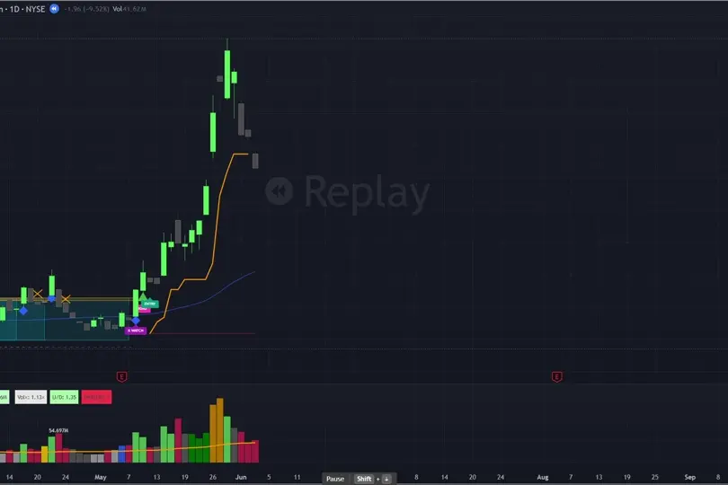
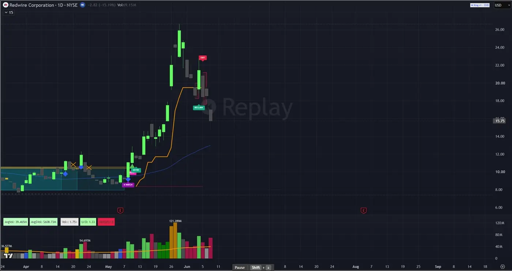

Signal-Lab
Turn an observation into a rule you can inspect.
A TradingView indicator developed to translate price-action research into repeatable entry alerts, staged exits, and ATR-based risk controls. The work focuses on making each rule visible and comparing how different signal filters behave.
Research · Rule design · Pine Script development
TradingView · Pine Script · Historical market data

Define what a setup means
Research starts with consolidation, trend, volume, and entry confirmation. Rather than relying on a chart impression alone, the indicator turns these characteristics into explicit conditions that can be inspected across historical examples.


Plan the exit as well as the entry
Staged exits and an ATR-based risk boundary support the position-management workflow. Entry and exit markers make it possible to review how a rule behaved against the price path.
Compare, refine, repeat
Historical signal cohorts help compare filters and confirmation choices. The replay below shows the indicator in context; it illustrates the interface and rule behavior, rather than a claim of future performance.